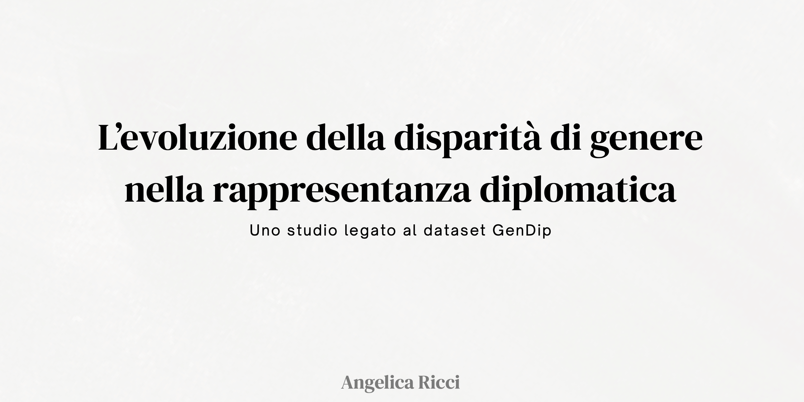
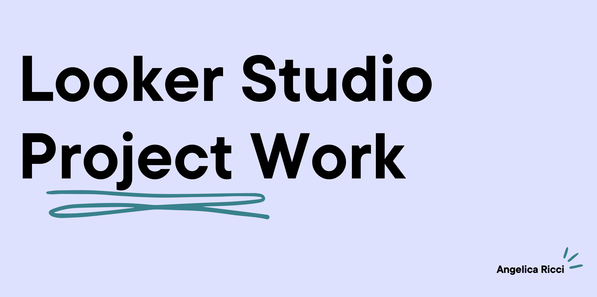
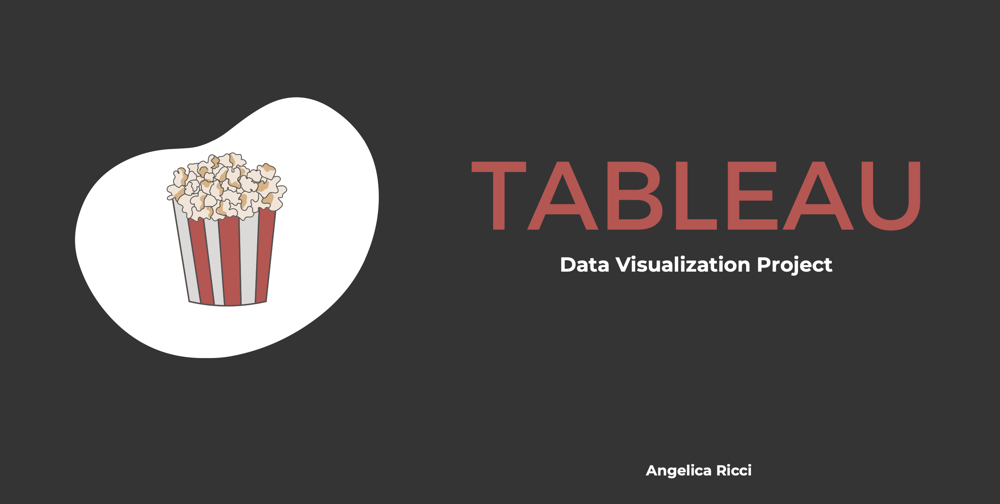
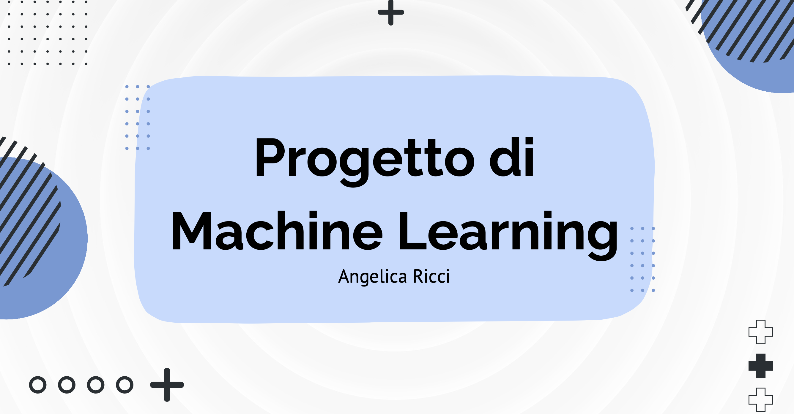
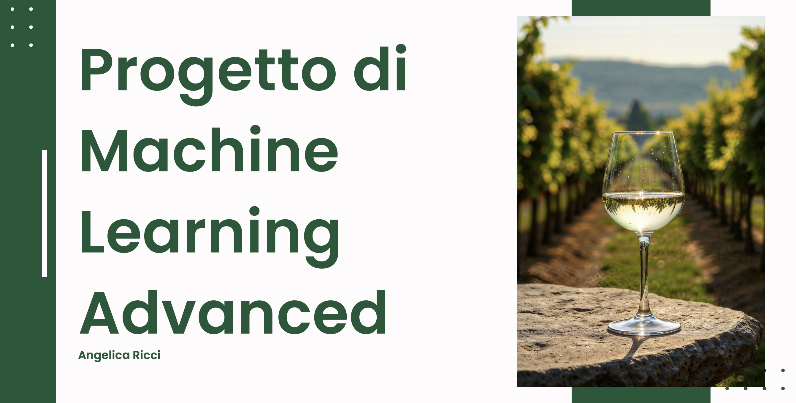

Alcuni dei lavori realizzati durante il Master in AI e Agenti AI per il Business.
Presentazione strategica per guidare un'azienda nel settore travel nella sua data-journey, con un focus sulla sostenibilità.
Sviluppo teorico di EduBridge, un'iniziativa AI-driven creata con lo scopo di ridurre il gap educativo tra il Nord e il Sud dell'Italia.

Progetto basato sul dataset GenDip (Gender in Diplomacy), attraverso il quale si sono analizzati i trend delle nomine diplomatiche dal 1968 al 2021 in più di 200 paesi.

Sviluppo di dashboard interattive in Looker Studio per analizzare la correlazione globale tra la distribuzione del cibo e i rate di obesità.

Sviluppo di dashboard interattive in Tableau per trasformare dati grezzi in insight strategici, focalizzando l'analisi su aspetti sociali ed inclusivi all'interno del catalogo globale di Netflix.

Progetto end-to-end che trasforma dati storici in un modello predittivo, identificando i fattori chiave dietro uno degli eventi più famosi della storia.

Creazione di una pipeline di Machine Learning volta ad identificare in modo automatico la provenienza e le caratteristiche dei vini, garantendo standard elevati lungo tutta la filiera.
Sviluppo di una landing page per un brand fittizio chiamato Hotel Pomelia, un business sostenibile a gestione familiare in Sicila.
Rappresentazione logica del processo di assegnazione di bonus pubblici per servizi sportivi, verificando tutte le condizioni necessarie affinché l’incentivo venga concesso.